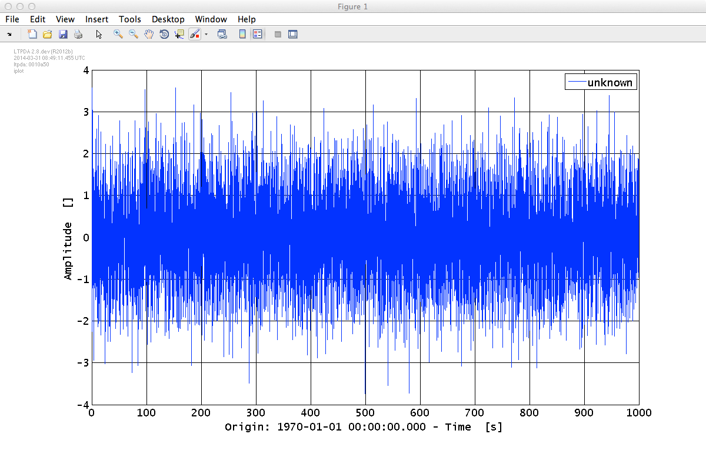
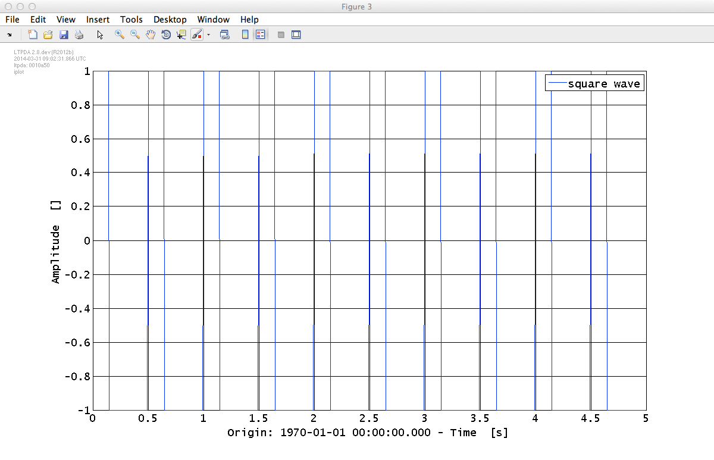

| LTPDA Toolbox™ | contents | |
Time-series data are stored in a data object of the class tsdata. As a user, you don't need to care about this, but it's sometimes nice to know how things work. There are various ways (constructors) to build time-series AOs. For example, you can give a set of values and a sample rate like
a = ao([1 2 3 4 5], 2)
The first argument is the Y data vector; the second, the sample rate.
If you run this command in the MATLAB terminal you should see
>> a = ao([1 2 3 4 5], 2)
M: constructing from Y values and fs
----------- ao 01: a -----------
name: ''
data: (0,1) (0.5,2) (1,3) (1.5,4) (2,5)
-------- tsdata [x, y] --------
x: [1 5], double
y: [1 5], double
dx: [0 0], double
dy: [0 0], double
xunits: [s]
yunits:
fs: 2
nsecs: 2.5
t0: 1970-01-01 00:00:00.000 UTC
-------------------------------
hist: ao / ao / a7151bd50f5dbc983e14bff537ac39ebf07824c5
description:
UUID: 1025a1c4-8dac-4ffd-99b3-552c41a98f14
--------------------------------
Now you see that the data type is tsdata and the X units are automatically set to seconds ('s'). You can also see that the data series spans 2.5s and that the first sample corresponds to 1970-01-01 00:00:00.000 UTC. You can set further properties of the object, for example
a.setT0('2014-06-01 12:23:44'); a.setDescription('My lovely time-series')
The time has come to go back to that plist command we saw earlier when plotting the AO history via the graphviz renderer.
The following two commands are equivalent:
a = ao([1 2 3 4 5], 2); a = ao(plist('yvals', [1 2 3 4 5], 'fs', 2))
Here we introduce the idea of parameter lists (plist). A plist is a list of parameters, each parameter being defined by a key/value pair. The key of a plist is always a string and is always case insensitive. The value can be anything: a number, a string, another LTPDA object, a cell-array, a structure, etc. For more information about parameter lists, see the appropriate section of the LTPDA user manual.
Going on with time-series objects: The following is almost equivalent:
a = ao(plist('xvals', [0 0.5 1 1.5 2], 'yvals', [1 2 3 4 5]))
The difference is, if you run this command, you will see that the resulting AO has data of type xydata. To make this a time-series object, we need to tell the constructor some more information. Either you need to specify the sample-rate, or you can explicitly set the data type:
a = ao(plist('xvals', [0 0.5 1 1.5 2], 'yvals', [1 2 3 4 5], 'fs', 2)) a = ao(plist('xvals', [0 0.5 1 1.5 2], 'yvals', [1 2 3 4 5], 'type',... 'tsdata'))
| The ellipsis (...) in MATLAB means join the two lines. |
If you specify the samples rate with the key 'fs', then the 'xvals' are just ignored. If you tell the data type with the key 'type', then the sample rate is computed from the 'xvals'.
You can add additional parameters to these constructor lines. For example,
a = ao(plist('xvals', [0 0.5 1 1.5 2], 'yvals', [1 2 3 4 5], ... 'type', 'tsdata', ... 'name', 'Bob', ... 't0', '2014-06-01'))
There are other constructors which make constructing time-series AOs from simulated data more convenient. Two of these are discussed below.
If you want to specify your time-series as a function of the variable t, then you can use the following constructor:
a = ao(plist('tsfcn', 't.^2 + t', ... 'fs', 10, 'nsecs', 1000))
You specify the function of t with the key 'tsfcn', then give the sample rate and the number of seconds. If you run this command you should see the output:
>> a = ao(plist('tsfcn', 't.^2 + t', 'fs', 10, 'nsecs', 1000))
M: constructing from plist
----------- ao 01: a -----------
name: ''
data: (0,0) (0.1,0.11) (0.2,0.24) (0.3,0.39) (0.4,0.56) ...
-------- tsdata [x, y] --------
x: [10000 1], double
y: [10000 1], double
dx: [0 0], double
dy: [0 0], double
xunits: [s]
yunits:
fs: 10
nsecs: 1000
t0: 1970-01-01 00:00:00.000 UTC
-------------------------------
hist: ao / ao / a7151bd50f5dbc983e14bff537ac39ebf07824c5
description:
UUID: ebedd13b-730b-4175-84e9-67740d4bb31e
--------------------------------
You can write any valid MATLAB expression as a function of t.
Plists can be reused, of course. Suppose we define a recipe for an AO as
pl = plist('tsfcn', 'randn(size(t))', 'fs', 10, 'nsecs', 1000)
then we can make repeated AOs from this recipe:
a1 = ao(pl) a2 = ao(pl)
% We can also use the random factory: % a = ao.randn(nsecs, fs) a3 = ao.randn(1000, 10)
Here we have made three AOs with different random white-noise data vectors.
To plot the data in the AO, you can use the intelligent plotting method, iplot. For example, type in the MATLAB terminal:
a1.iplot
and you should see a plot like the one below.
We can make a more interesting plot if we first specify some of the properties of the AOs. For example, type the following commands to set the names and Y units of the two AOs we made earlier:
a1.setName
a2.setName
setYunits(a1,a2,'N')
Now plot both time-series together with:
iplot(a1,a2)
and you shoud see a plot like the following:

| Calling the setName method with no input argument causes the AO to be named with the variable name. |
iplot has many configurable parameters which are (mostly) documented in the help. Additionally, you can specify in detailed way the plotting preferences by accessing the appropriate section in the LTPDA Preferences.
MATLAB has various functions for creating standard waveforms, for example, sine waves, square waves, and saw-tooth signals. These are available as convenient AO constructors. For example suppose we want to create a square-wave pulse train with a 30% duty cycle at 2Hz sampled at 100Hz lasting for 5s, then we can do
sw = ao(plist('waveform', 'square wave', 'f', 2, 'duty', 30, ... 'fs', 100, 'nsecs', 5))
If you run that command and plot the result, you should see the square wave you were expecting:
You can construct various different waveforms, but each has different parameters to set. The help of the AO method details the possibilities (help ao -> click on "Parameters Description" -> select "From Waveform"); for the constructor we are describing the the relevant extract is here.
| |
Making AOs | Basic math with AOs | |
©LTP Team